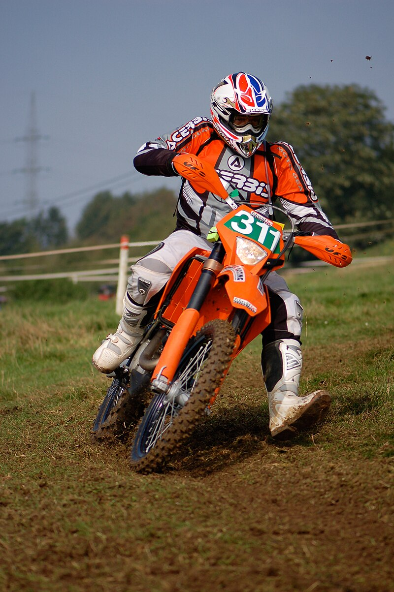

Enduro je motocyklový sport, při němž je úkolem jezdce na motocyklu projet terénním úsekem co nejvícekrát v co nejkratší době.
Zdroje:
Online. In: Wikipedia: the free encyclopedia. San Francisco (CA): Wikimedia Foundation, 2001-, 26.2.2024. Dostupné z: https://cs.wikipedia.org/wiki/Enduro. [cit. 2024-06-03].